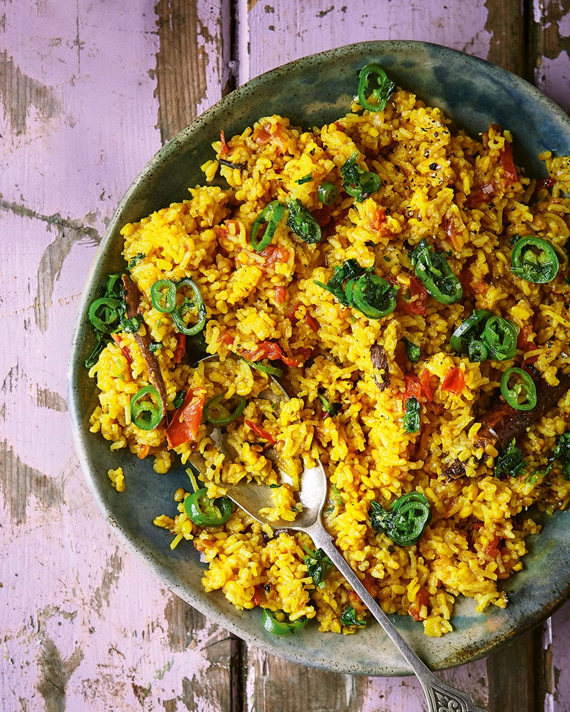

Khicari

Khichari is a nutritious stew mainly composed of dal and rice.
Ingredients
- 1/3 cup(85 ml) split mung beans
- 1 cup (250 ml) basmati or other long grain rice
- 3 tablespoons (60 ml) ghee or oil
- 1/3 cup (85 ml) raw cashew pieces or halves
- 2 teaspoons (10ml) cumin seeds
- 1 tablespoon (20 ml) fresh hot green chilli, minced
- 2 tablespoons (40 ml) minced fresh ginger
- 1 teaspoon (5 ml) tumeric
- 1 teaspoon (5 ml) yellow asafoetida powder
- 1 small cauliflower (about 400g, or 14 ounces) cut into small flowerets
- 5-6 cups (1.25 - 1.5 litres) water
- 1 1/2 teaspoons (7 ml) salt
- 1 tablespoon (20 ml) butter
- 2/3 (165 ml) cooked green peas
- 1 cup (250 ml) tomatoes, peeled and chopped
- 1/2 cup (125 ml) chopped fresh coriander leaves
Instructions
- Wash and drain the dal and rice.
- Heat the ghee in a heavy 4-litre non-stick saucepan over moderate heat.
- Fry cahews in hot ghee until they turn golden brown, then put aside
- Fry the cumin seeds in the ghee, then add the chillies and ginger, then saute and add the tumeric and asafoetida
- Add cauliflower pieces, stir fry for a minute or so.
- Finally, add dal and rice, stirrin in the spices and vegetables for 1 minute.
- Add water and bring to full boil over high heat
- Reduce heat to low, partially cover and cooke slowly for about 25 - 30 min until the dal and rice are soft.
- Before removing the khichari from heat, fold in the salt, butter, cooked green peas, chopped tomatoes, toasted cashews and the chopped coriander leaves.